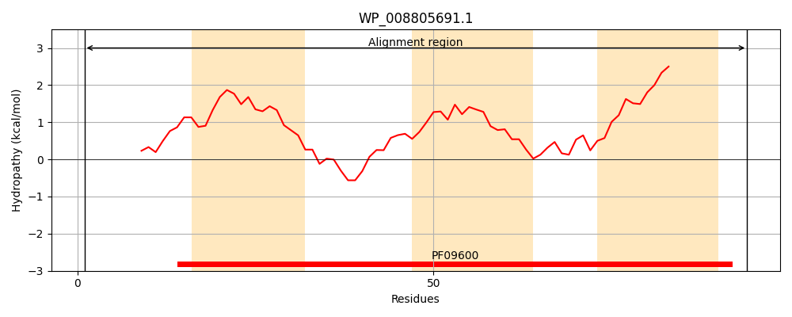
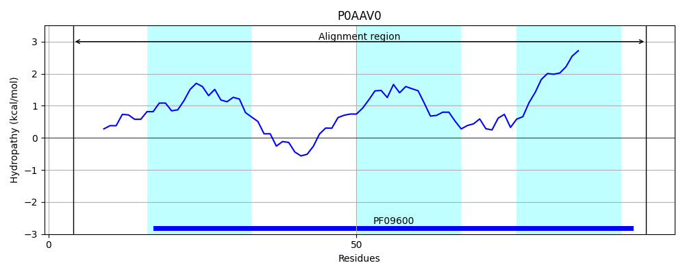
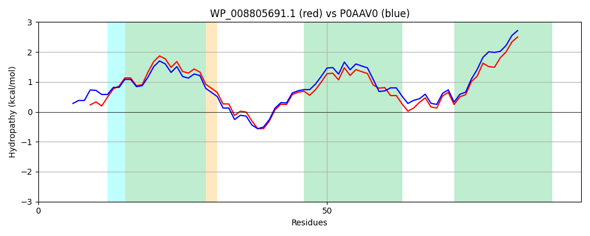

Hit Accession: P0AAV0
Hit TCID: 8.A.79.1.1
Hit Description: gnl|BL_ORD_ID|8686 gnl|TC-DB|P0AAV0|8.A.79.1.1 Uncharacterized protein YbgE OS=Escherichia coli (strain K12) GN=ybgE PE=4 SV=1
Mach Len: 94
e:0.000000
Query TMS Count : 3
Hit TMS Count: 3
TMS-Overlap Score: 2.550000
Predicted Substrates:None
BLAST Alignment:
| Protein Hydropathy Plots: | |
|---|---|
|  |  |
Pairwise Alignment-Hydropathy Plot: | |
|  | |